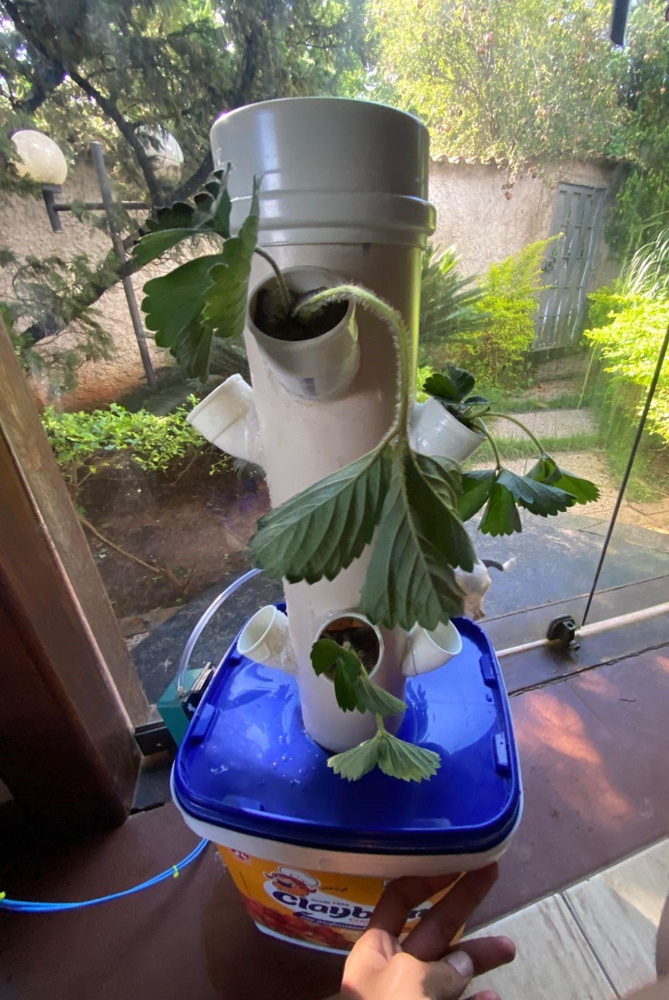

Meu nome é Marcos Gabriel, tenho 25 anos sou de Buenopolis-MG, nasci em curvelo e moro atualmente em Belo Horizonte-MG. Eu gosto muito de tecnologia, programação e principalmente eletrônica.
Gosto de desenvolver projetos envolvendo automação, IoT e sistemas inteligentes embarcados, utilizando plataformas como Arduino, ESP32, integração com Home Assistant, e futuramente com um software e hardware proprios!!
Atualmente estou desenvolvendo sistemas de automação para irrigação, hidroponia, estufas inteligentes, casas e comunicações de longa distância usando LoRa.